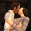
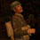

Production Notes - Scene 5 - Back in the Saddle
My favourite scene in the film - classic 1940's wartime cinema in full force!
The lack of dialog and all other sound effects here was intentional.
Despite the western-sounding theme, I felt "In the Saddle" was the best choice for this moment due to its triumphant sound.
This is one of several scenes for which almost every shot strikes a musical cue.
Iconic imagery:

Lance and Stephanie's final kiss before his departure. The classic "Screen Kiss" scene was chosen, with a side-view camera angle and lighting intended to make them stand out as clearly as possible.

Lance struts up to Mayweather's military jeep, with their horse jumping up on its hind legs (high-resolution version only). One of the few moments that I think "Ego Walk" actually works, as triumphant music plays full force in the foreground.
Visual editing you may not have noticed:
- In the scene with Lance and the squad meeting, you can see their lips moving. While I wanted this scene to be purely musical, I did at least want to give the impression that they're having a conversation. I imagine them saying some not-so-nice things about Nazis here. ;) To achieve this, I used a muted lip-synch technique that involves: recording the lines, activating the lip-synch, exiting the game, and editing the OGG files in Audacity to silence the audio. The actual lines I spoke for the lip-synch were something along the lines of: Lance (played by JazzX): "My name is Lance and I'm something something something." Devin (played by me): "I'm Corporal Devin and something something." Cooper (played by TheMonk): "Well that's so very exciting. I'm a TMO radio host who's time travelled from the year 2007." :)
Musical cues you may not have noticed:
- Each camera angle for the "Screen Kiss" strikes a trumpet cue.
- Each camera angle of Lance changing and walking out to Mayweather's car strikes a trumpet cue.
- The violin section decrescendo is timed to match Stephanie waving and cross-fading to Lance meeting his new squad-mates.
- The next violin section decresendo is timed to match the cross-fade to the squad being initiated by Sergeant Norfolk.
- The introduction of the horn section is timed to match the front wide-angle shot of the squad.
- The next horn section cue is timed to match the top-down shot of the squad.
- There is also a cue timed to match the shot where Corporal Devin fixes his shirt/gear - not sure how to describe that musically. ;)
The Riley Programming Site

{kind=link}
{kind=link}